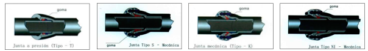

- Acceso Rápido
- Inicio
- Introducción
- Qué hacemos
- Índice
- Válvulas
- Tuberías y Fitting
- Instrumentos para Analisis y Auscultación de Redes
- Instrumentación y Análisis
- Bombas
- Equipo de desinfección
- Equipo de tramamientos de Agua y Líquidos
Válvulas
Válvula de Corte

Descripción
En los procesos en que se requiere el paso de fluido con alta concentración de sólidos se requieren válvulas con paso completo y sin hendiduras, para evitar atascos y depositaciones en las piezas especiales. La válvula de BOLA y la de tipo PLUG, nos entregan la posibilidad de manejar fluidos on sólidos, viscosos y además dependiendo de los materiales de sello y recubimiento, podemos tratar fluidos con temperatura y químicos. Materiales: GGG40/AISI304, AISI304/AISI316 Diámetros desde DN 50 hasta 200, PN 10 - 16Descripción
En los procesos en que se requiere el paso de fluido con alta concentración de sólidos se requieren válvulas con paso completo y sin hendiduras, para evitar atascos y depositaciones en las piezas especiales. La válvula de Macho o Plug, nos entrega la posibilidad de manejar fluidos con sólidos, viscosos y además depenciendo de los materiales de sello y recubri-miento, podemos tratar fluidos con temperatura y químicos.Descripción
Válvulas compuerta diseñadas para agua potable, aguas residuales y líquidos neutros hasta 150ºC El diseño de esta válvula es de acuerdo a ANSI / AWWA C500-86, Dimensiones cara a cara de acuerdo con ANSI B16.10 Brida de acuerdo a ANSI / AWWA C110 A21.10Válvulas
Válvula de Corte
Descripción
En las válvulas de compuerta metal metal tradicionales, normalmente se pre-sentan filtraciones, debido a que su sello es de tipo prensa estopa entre la tapa y el husillo. En muchas ocasiones este tipo de válvulas, se traban debido al material del husillo y/o los anillos de sellado. Nuestra válvula cuida todos los detalles de diseño para asegurar un sellado estanco en el tiempo.Descripción
En los procesos en que se requiere el paso de fluido con alta concentración de sólidos se requieren válvulas con paso completo y sin hendiduras, para evitar atascos y depositaciones en las piezas especiales. La válvula de BOLA y la de tipo PLUG, nos entregan la posibilidad de manejar fluidos on sólidos, viscosos y además dependiendo de los materiales de sello y recubimiento, podemos tratar fluidos con temperatura y químicos. Materiales: GGG40/AISI304, AISI304/AISI316 Diámetros desde DN 50 hasta 200, PN 10 - 16Descripción
Las válvulas de mariposas concéntricas o WAFFER, llevan la lenteja centrada con su eje cruzando el asiento. El asiento elastomérico va sobre la parte inter-na del cuerpo, por lo que el accionamiento origina un continuo rozamiento de la lenteja sobre el elastómero. Las válvulas de mariposa con doble excentricidad EATHISA, permiten hacer muchos ciclos sin que el asiento elástico sufra desgaste, ya que éste no roza en ningún punto durante el accinamiento.Válvulas
Válvula de Corte

Descripción
En algunos casos en los que el espacio disponible es pequeño, no se pueden colocar válvulas de compuerta elastomérica a causa de la distancia entre las bridas. En las válvulas de mariposas clásicas, normalmente, no se produce un cierre rápido en el flujo de agua, proceso que es indispensable, especialmente en riegoDescripción
En algunos casos en los que no hay mucho espacio disponible para la instalación de otro tipo de válvulas, esta válvula permite su instalación segura mediante bridas, donde otras no caben. En las válvulas de mariposas clásicas, normalmente, no se produce un cierre rápido del flujo de agua, con esta válvula se puede efectuar tanto un cierre lento como también uno rápido, usando para ello diversos mecanismos de actuación tanto manuales como eléctricos.Descripción
Las válvulas de compuerta no son elementos pensados para su uso en aguas servida. Tan solo las válvulas de compuerta de contacto elastomérico suelen usarse en ciertos tipos de procesos. Este tipo de fluido se caracteriza por llevar sólidos y otro tipo de elementos en suspensión que obstruyen la compuerta en el momento de cierre. Suelen enredarse en las sujecciones y otros elementos interfiriendo en su correcto funcionamientoVálvulas
Válvula de Corte

Descripción
Las válvulas de diafragma se utilizan para el corte y estrangulación de líquidos que pueden llevar una gran cantidad de sólidos en suspensión. En las válvulas de diafragma se aísla el fluido de las partes de mecanismos de operación. Esto las hace idóneas en servicios corrosivos o viscosos, ya que evita cualquier contaminación hacia o del exterior. La estanqueidad se consigue mediante una membrana flexible, generalmente de elastómero, pudiendo ser reforzada con algún metal, que se tensa por el efecto de un eje-punzón de movimiento lineal, hasta hacer contacto con el cuerpo que hace hacientoDescripción
En algunos casos en los que no hay mucho espacio disponible para la instalación de otro tipo de válvulas, esta válvula permite su instalación segura mediante bridas, donde otras no caben. En las válvulas de mariposas clásicas, normalmente, no se produce un cierre rápido del flujo de agua, con esta válvula se puede efectuar tanto un cierre lento como también uno rápido, usando para ello diversos mecanismos de actuación tanto manuales como eléctricos.
Descripción
En las Plantas de tratamiento es muy común tener que guiar el caudal a distintos procesos, especialmente en la zona de pretratamiento donde las aguas son mas agresivas. Este tipo de agua contiene sólidos y elementos químicos en suspensión que suelen dañar las válvulas cuando son de buena calidad, produciendo graves deterioros y provocando de esta forma una disminución de su vida útil. En cuanto a su diseño, posee un obturador metálico que genera el cierre (en su parte superior porta el elastómetro NBR) y el asiento es un elastómetro NBR en su parte inferior y laterales. Materiales: Acero inoxidable AISI, Acero al carbono galvanizado, revestido en epóxi o ácero inóxidablVálvulas
Válvula de Corte
Descripción
En aguas servidas es común el uso de válvulas murales. Este tipo de agua contiene sólidos y elementos en suspensión que suelen dañar las válvulas cuando no son de buena calidad, produciendo graves deterioros y provocando de esta forma una disminución de su vida útil. En cuanto a su diseño, posee un obturador metálico que genera el cierre (en su parte superior porta el elastómero NBR) y el asiento es un elastómero NBR en su parte inferior y laterales. Materiales : AISI304, AISI316, Acero Carbonogalvanizado, GG25, NBR. Dimensiones : DN 200a 2000, PN 6Válvula de retención
Descripción
En las actuales válvulas de retención, es común a causa del uso del soporte donde va el eje de la clapeta, se produzca un desgaste constante y una corta vida útil. Por otra parte, al estar fabricada en fundición gris al no ser dúctil se deteriora producto de los fracuentes golpes de la clapeta contra el cuerpo. En algunos casos la clapeta puede llegar incluso a quebrarse, alcanzando pedazos de ella a las aspas de la bomba y produciendo daños irreparables. Materiales : GG25, bronce, NBR GGG40, Acero Inoxidable Diametros desde DN 50 hasta 400; PN 10 - 16Descripción
En los sistemas de bombeo, las válvulas clásicas de clapeta sufren lo llamados “golpes de clapeta”, a causa de la lentitud de su cierre. La clapeta se encuentra normalmente a medio cerrar cuando la columna de agua retrocede con gran inercia, haciendo que ésta se golpee fuertemente contra el cuerpo de la válvula y llegando incluso a ocasionar el quiebre de esta pieza. En algunos casos los pedazos de la clapeta estropeada llegan a las bombas, produciendo graves daños en las mismas. Materiales : Acero Fundido, Acero Inoxidable, NBR, EPDM Diámetros desde DN 40 hasta 1200; PN 10 a 40Válvulas
Válvula de retención
Descripción
Las Válvulas de retención de cierre rápido fueron desarrolladas para sustituir de manera eficaz a las válvulas de retención de concepción clásica, de doble clapeta, clapeta única y silent check, que son responsables de los golpes de ariete que provocan roturas y otros accidentes en cañerías y tuberías. La válvula se cierra instantaneamente y al mismo tiempo que el flujo se invierte. Esto se logra por tener un obturador de recorrido reducido de baja inercia y reducidos atristo internos. Diámetros de DN80 a DN500, tipo wafer y de DN600 a DN1800 bridadas, PN10 a PN50Descripción
Las válvulas de clapeta antiretorno son elementos pensados para su uso en aguas servidas, ya que este tipo de fluido se caracteriza por llevar sólidos y otros tipos de elementos en suspensión. Todos esos elementos obstruyen la clapeta en el momento del cierre. Incluso en las sujeciones y otros elementos evitando su correcto actuar. Materiales : GGG40, AISI304, AISI316, AISI420, NBR, EPDM, PTFE, A194 Galvanizado Diámetros desde DN50 hasta DN500; PN 10Válvula de Protección de Redes
Descripción
Las ventosas son consideradas el más importante equipo para protección de redes, aparte de hacer funcionar las redes sin aire y evitar que colapse la tubería, es uno de los principales equipos para defender de los golpes de ariete debido a la detención de bombas. La ventosa puede incorporar un sistema que ayuda a prevenir cierres bruscos de la ventosa, asegurando una presión dentro de ésta la tubería que ayuda a evitar cualquier golpe de ariete. Materiales : Hierro dúctil, Latón, Acero inoxidable, PE de AD, EPDM, Acero al carbón Aluminio. Diámetros desde DN50 hasta DN300, PN 16-25w.Válvulas
Válvula de Protección de Redes
Descripción
Siempre que ha existido la necesidad de impulsar y conducir aguas servidas a presión, se produce el problema de como eliminar el aire de las conducciones. Las ventosas normales se atascan o ensucian y dejan de funcionar al poco tiempo de uso. Este problema se puede solucionar utilizando ventosas diseñadas para estos fines. Las ventosas Eathisa para aguas servidas, están diseñadas para trabajar con aguas cargadas y servidas. Esto se logra debido a que los orificios de paso del aire y elementos mecánicos nunca están en contacto con el agua. La forma del cuerpo evita cualquier depósito de grasa o cuerpos extraños. Materiales : GG-20, FRP, Epóxico, Polipropileno, CPVC, Acero inoxiDescripción
Las ventosas son consideradas el más importante equipo para protección de redes, aparte de hacer funcionar las redes sin aire y evitar que colapse la tubería, es uno de los principales equipos para defender de los golpes de ariete debido a la detención de bombas. La ventosa puede incorporar un sistema que ayuda a prevenir cierres bruscos de la ventosa, asegurando una presión dentro de ésta la tubería que ayuda a evitar cualquier golpe de ariete. Materiales : SST304, HDPE, EPDM, SST334, DIN125-A2, D.I. ISO 1083 GR 400-15, Grass EN 12165 CW617N, DIN934-A2, NR, DIN933-A2, Fundición de acero, Aluminio, PVC. Diámetros desde DN50 hasta DN300, PN16-25Descripción
Eliminar el aire de conducciones en lugares donde existen diferentes presiones se ha convertido en una preocupación constante, por causa especialmente de la delicada localización en que se encuentran ubicadas. Normalmente las ventosas que se utilizan se atascan y ensucian, debilitando con el tiempo su funcionamiento y produciendo contaminación y rotura de cañerías. Materiales : GRP, NBR, Polopropileno, EPDM Diámetros DN50, PN16Válvulas
Válvula de Protección de Redes
Descripción
En las redes de agua potable, siempre existe la posibilidad de encontrar cuerpos extraños y suciedad dentro de las tuberías. Estas impurezas pueden producir grabes daños en elementos de la red tales como válvulas de corta, válvulas de retención y ventosas. Especialmente crítica es la situación de la suciedad de válvulas de regulación y válvulas de mariposas. Materiales GG25, ANSI, Galvanizado, Klejerit, Bronce Díametros desde DN50 hasta DN350, PN16Descripción
Si el filtro está siendo utilizado para la protección del lugar que tiene filtración directa las pantallas estándar, en la mayoría de las aplicaciones, serán suficientes. Para los servicios que requieren pantallas extremadamente resistentes, tales como los de Alta presión/Temperatura se requieren aplicaciones con alta viscosidad y pantallas perforadas sin revestimiento de malla. El Forro de malla tiene la obligación de tener un cierto nivel de filtración, y luego una atrapada perf/malla/perf, esta combinación recomendada.Descripción
La válvula de seguridad trabaja con un regulador automático de alivio de presión actuando por la presión estática existente en la entrada de la válvula y se caracteriza por una primera fase de apertura progresiva y una posterior apertura total instantánea. Diseño según "norma internacional ISO 4126-1:2004"Válvulas
Válvula de Protección de Redes
Descripción
Las válvulas de sobre velocidad se cierra cuando el caudal sobrepasa el valor normal de trabajo, debido por ejemplo a una rotura de la tubería, luego de eso la apertura de la válvula deberá hacerse manualmenteDescripción
La válvula anticipadora de golpe ariete es indispensable para la protección de bombas, equipos de bombeo y todas las líneas a las que se aplica una presión peligrosa de transitorios ocasionados por cambios repentinos en la velocidad del flujo dentro de la línea. Cuando un sistema de bombeo enciende y apaga gradualmente, no ocurren transitorios dañinos, pero cuando existe algún fallo de energía que produce un paro repentino de la bomba, provoca transitorios peligrosos en el sistema que pueden causar daños severos en los equipos, en estos caso el control de alivio abre con la onda baja de presión inicial, desviando el regreso de la onda de presión alta del sistema, en consecuencVálvulas de Control
Descripción
En agua potable se deben utilizar válvulas de control que soporten un uso continuo, por esto se utilizan válvulas más robustas que puedan soportar las exigencias de este tipo de trabajo. En agua potable debe asegurarse la regulación frente a cualquier variación en el caudal de paso, a diferencia de los sistemas de riego, en que los caudales son constantes, estas válvulas son diseñadas especialmente para sistemas de regulación de agua potable, debido a su diseño con cuerpo, tapa y obturador en fundición nodular.Válvulas
Válvulas de Control
Descripción
En agua potable se deben utilizar válvulas de control que soporten un uso continuo, por esto se utilizan válvulas más robustas que puedan soportar las exigencias de este tipo de trabajo. En agua potable debe asegurarse la regulación frente a cualquier variación en el caudal de paso, a diferencia de los sistemas de riego, en que los caudales son constantes, estas válvulas son diseñadas especialmente para sistemas de regulación de agua potable, debido a su diseño con cuerpo, tapa y obturador en fundición nodular.Descripción
Como respuesta a las exigencias de un mercado cada vez más competitivo, y de mayores exigencias técnicas, se a diseñado una válvula optimizada en cuanto funcionalidad. La sencillez del diseño de esta válvula que con muy pocos elementos que puedan fallar, la hacen una válvula muy fiable incluso con aguas de cierta suciedad. Su diseño permite la aplicación de diversos sistemas de pilotaje, incluyendo sistemas eléctricos y de comando a distancia. Materiales : Fundición dúctil, Recubrimiento apóxico de goma natural, Acero inoxidable, Bronce. Diámetros desde DN50 hasta PN100 - 25Descripción
Las válvulas de globo son llamadas así por la forma esférica de su cuerpo, si bien actualmente algunos diseños ya no son tan esféricos, conservan el nombre por el tipo de mecanismo en este el obturador de la válvula se desplaza con un movimiento lineal, en la mayoría de los casos, el mecanismo de avance es la de un “tornillo” y el vástago del obturador va roscado al bonete de la válvula de globo. En cuanto se le da vueltas al vástago, ya sea mediante un volante o un actuador de giro múltiple, el obturador avanza linealmente. Las válvulas de globo automatizadas pueden tener vástagos sin rosca, y el desplazamiento lineal viene directamente proporcionado por el actuador. &nVálvulas
Válvulas de Control
Descripción
En algunos procesos de regulación, es necesaria una válvula de apertura lineal (en cuanto al área de paso). Las válvulas de mariposa, que normalmente se utilizan para los procesos de regulación modulados, se les puede indicar el grado de apertura que se requiere, pero el área de paso por la válvula no es lineal y la mayor estrangulación sólo se produce en los últimos grados de cierre. Por el mismo hecho que en las válvulas de mariposa la mayor estrangulación se origina en los últimos grados de cierre, se produce una cavitación que causa grandes daños a ésta. Materiales : GGG40, Acero FE 360B Niquelado, AISI 304, AISI 420, Bronce, Tefón NBR 90, NBR 70. Diametros desde DDescripción
Las válvulas de chorro múltiple son lo último en válvulas de control, regulan la presión o controlan el flujo sin ninguna limitación de operación, usando un método patentado de disipación de la energía hidráulica en el agua en el cuerpo de la válvula sin ningún problema que pudiese causar la cavitación y la vibración. La operación de la Válvula de chorro múltiple se basa en disipar la energía regulando el agua a través de un modelo de boquilla de disminución gradual del chorro múltiple que provoca que el chorro de fluido de cada boquilla individual choque con los otros chorros, el choque de los chorros de agua logra una pérdida total de la velocidad de la energía dentSistema de control, tableros y actuadores
Descripción
El Controlador, mediante una simple instalación y programación, permite el ajuste, en forma continua y precisa de diversos parámetros en una válvula reguladora de Globo, pudiendo efectuar diversas funciones como reductora de presión, sostenedora/reductora, controladora de caudal, anticipadora de golpe de ariete, y funciones extras como detección de sobrevelocidad. El sistema posee todas las salidas y entradas para fijación remota de parámetros de control desde un sistema scada y provee señales de retransmisión para sistemas de Telemetría.Válvulas
Sistema de control, tableros y actuadores
Descripción
En procesos de dosificación, siempre se buscan equipos con una alta precisión en la dosificación y un alto grado de protección ambiental, para asegurar una buena fiabilidad en tiempo. El controlador Captrol, provee una herramienta superior para el control de dosificación de cloro y otros compuestos, en lazos cerrados por residual, caudal, loop compuesto u otros parámetros a través de un control PID microprocesado.Descripción
El monitor de procesos HC-96, más que un monitor el 96 configura un poderoso equipo que maneja alarmas y retransmisión del parámetro medido. Posee un alto grado de confiabilidad, con una protección tipo NEMA 4X en su frente.Descripción
En la telemetría actual no es necesario tener una comunicación en tiempo real con todos los puntos de una red, lo importante es guardar información histórica y manejar las alarmas. El módulo SCANTRIC, permite manejar las conexiones con diversos equipos con salidas discretas (limites de carrera, guarda niveles), analógicas (sensores de presión, nivel y caudal) y comunicaciones (algunos instrumentos y PLC´s). Tiene salidas discretas para hacer control local en caso de requerirse.Válvulas
Sistema de control, tableros y actuadores
Descripción
El sistema de control de presión mediante una simple instalación y programación, ajusta en una válvula reguladora tipo globo o de diafragma, a dos niveles de presión previamente seleccionados, en base a un perfil horario o bien según el caudal de paso. En los puntos críticos de la red previene las roturas, disminuyendo la presión de salida de la válvula, cuando la demanda baja, asimismo cuando aumenta, incrementa la presión al nivel máximo prefijado para poder suministrar la presión necesaria. Este sistema se opera desde baterías, con una larga vida ( > 5 años) eliminando la necesidad de contar con fuerza en el lugar de la válvula, además se puede configurar como sistema dDescripción
El sistema electrónico de control de presión de perfil variable es un nuevo e innovativo diseño que, mediante una simple instalación y programación, permite el ajuste, en forma continua y precisa de la consigna de una válvula reguladora de presión dependiendo de las demandas de la red. En los puntos críticos de la red es capaz de mantener casi una presión constante, permitiendo maximizar los beneficios en los momentos en los que la demanda aumenta y minimizar las pérdidas y roturas cuando la demanda se reduce. Usando esta característica conjuntamente a un Módem y a un computador dedicado, se convierte en poderoso sistema de gestión de la red.Descripción
Con los requerimientos actuales de automatización, cada día se requiere automatizar una mayor cantidad de válvulas, para esta creciente demanda la solución la provee el actuador AUMA que esta diseñado bajo las más estrictas normas europeas, para actuar en cualquier tipo de válvula con un eje de cierre con movimiento angular, de una o más vueltas en operación. Posee numerosas características de seguridad que protegen las válvulas ante sobre esfuerzos o bloqueos por obstrucción, sobre presión, etc.Válvulas
Sistema de control, tableros y actuadores
Descripción
En muy pocas ocasiones podemos encontrar en un producto, las características que realmente nos gustarían. Los actuadores modelo AVAT pueden ser configurados sin necesidad de remover su cubierta a través de la herramienta de ajuste infrarojo suministrada, se puede accesar a los procedimientos de ajustes, ajuste del valor de torque, limite de posición y otras funciones de control e indicación incluso en circunstancia de riesgo. el actuador permite la puesta en marcha y ajustes sin importar si el suministro de energía del actuador este en estado ON o en el estado OFF.Descripción
En muy pocas ocasiones podemos encontrar en un producto, las características que realmente nos gustarían. Los actuadores AVAR pueden ser configurados a través de 4 botones sin necesidad de remover su cubierta, lo que asegura un ahorro de tiempo en el ajuste del valor del torque, limite de posición y otras funciones de control e indicación incluso en circunstancia de riesgo tales como aplicación nuclear. Los datos de ajuste son salvados en la memoria incluso en el caso de una perdida de energía.Descripción
En muy pocas ocasiones podemos encontrar en un producto, las características que realmente nos gustarían. Los actuadores modelo AVAT puede se configurado sin necesidad de remover su cubierta a través de la herramienta de ajuste infrarrojo suministrada, se puede accesar a los procedimientos de ajustes, ajuste del valor de torque, limite de posición y otras funciones de control e indicación incluso en circunstancia de riesgo, el actuador permite la puesta en marcha y ajustes sin importar si el suministro de energía del actuador este en estado ON o en el estado OFF.Tuberías y Fitting
Estandares de Calidad
Los Productos son fabricados de acuerdo a las normas ISO2531 / ISO7186 / EN545 / EN598 / GB / T13295 El Sistema de gestión está por Lloyd’s ISO 9001:2000. Acreditación de la conformidad del producto está certificada por el Bureau Veritas de Francia (ISO2531 / ISO7186 / EN545 / EN598 / ISO4179 / ISO8179-1 / ISO8179-2). La compañia tiene la certificación de sistemas de protección ambiental de acuerdo a la ISO14001 y esta certificada por GB/T 28001 en lo que respecta al sistema de gestion de seguridad y salud.Tuberías de Hierro Dúctil
Las Tuberías de hierro dúctil posee la calidad del hierro y el rendimiento del acero y tiene características de alta resistencia, alta elongación y resistencia a la corrosión, lo cual es la mejor opción en el mundo actual para transportar agua y gas de manera segura y confiable.Material de los Productos
En hierro dúctil, el grafito existe en la forma esferoidal, lo cual tiene poca influencia para debilitar la matriz resultando una centralización de la tensión, por lo que el hierro dúctil posee propiedades flexibles muy altas. Mientras que en el hierro gris, el grafito se presenta de forma laminar lo cual tiene el efecto de cortar la matriz del hierro y hacer que se convierta en quebradizo con facilidad de agrietarse. Las propiedades macánicas del hierro dúctil son muy superiores a aquellas del hierro gris y más cercano a las propiedades del acero. El Hierro dúctil posee las propiedades del hierro y la calidad del acero.Tuberías y Fitting
Presión Superior-Resistencia
Documentación relativa a terremotos indica que el rango de daño por kílometros para tubería de hierro dúctil es cuatro veces menor que la tubería gris y trece veces menor que otras tuberías. Prueba de hermiticidad con aire: La tuberia de hierro dúctil a ser utilizada para transportar gas será sujeta a la prueba de hermiticidad con aire tubo por tubo y la presión de prueba de 0.6 Mpa.Recubrimientos Externos y Revestimientos Interiores
Protección Externa
Zinc con tapa de acabado en pintura bituminosa. Recubrimientos de epoxi, pintura rica en aluminio en polvo o poliuretano, etc, pueden ser suministrados también de acuerdo a los requerimientos del cliente.Protección Interna
Revestimiento de mortero de cemento, revestimiento de epoxi, cerámica, poliuretano, polietileno, etc, pueden ser suministrados también de acuerdo a los requerimientos del cliente. Instrumentos para Analisis y Auscultación de Redes
Inspección Televisiva
Descripción
La Cámara Multidireccional Orientable, es el corazón del sistema de inspección de tubería motorizado, su cabezal orientable y rotativo permite una visión hemisférica de alta calidad. Con un elemento de imagen de alta resolución, entrega una imagen clara y contrastada. Además este equipo puede incorporar un inclinómetro y una unidad láser para efectuar mediciones de roturas u obstrucciones dentro de la tubería.Descripción
El sistema de carretes de enrolle permite el correcto manejo de cables umbilicales de los sistemas de inspección televisiva, y puede ser motorizado o de operación manual, según el modelo puede manejar hasta 350 mts de cable. Su sólida construcción permite una operación confiable Incluso en condiciones difíciles. Todos los modelos de carretes poseen de forma estándar un sistema de conexión de tipo anillo rotatorio. con conector externo y contador de cable y la motorización puede estar disponible un ordenador de enrollado y velocidad de rebobinado vanable, de sólida construcción especial para trabajar en ambientes difíciles. Motorizable según modelo V de conector de anillos rotDescripción
El sistema de tracción multidireccional. posee una excelente estabilidad por su bajo centro de gravedad. añadida a una robustez garantizada para soportar los difíciles y agresivos ambientes que se encuentran en el interior de tuberías y desagües. Su sistema de tracción en la cuatro ruedas y oruga lo hacen apto para ser conducido en las peores ondulaciones. salvando obstáculos difíciles y con incluso superficies resbaladizas y empinadas, Con una máxima flexibilidad, por su diseño modular de dos cuerpos se adentra en tuberías de hasta 1200 mm> de diámetro Sus ruedas son intercambiables, existiendo una gran variedad de modelos para cubrir todas las situaciones que se dan en terreInstrumentos para Analisis y Auscultación de Redes
Inspección Televisiva
Descripción
En las empresas Sanitaria siempre está la necesidad de poder inspeccionar los trabajos de limpieza para poder conocer la calidad del trabajo realizado. En algunos casos se hace con equipos de gran costo y de funcionamiento más complejo. Para hacer una inspección rápida de cualquier ducto mayor o igual a 50 mm, se diseñó un sistema totalmente portátil y de fácil uso. El diseño permite hacer inspecciones en cualquier ducto de 50 mm en adelante, la unión flexible de la cámara. permite en entrar en puntos complicados y pasar por codos, etc.. la cámara es estanca a 30 de presión. El sistema de control es IPGS y aparte de los controles de la cámara, incluye un videograbador VHS y unaDescripción
El sistema de control VSR 55, esta pensado y diseñado bajo el concepto de polivalencia que exige el complejo control de el sistema de inspección de tubería, que normalmente se conforma por una cámara orientable y rotable, con un sistema de iluminación y tracción multidireccional, adicionalmente de otras funciones auxiliares como mediciones, presentación de vídeo, alimentación de luminarias, etc. Su robusta construcción además incorpora protección contra golpes y estanqueidad contra salpicaduras de agua, incorporando sistemas de control para tracción, iluminación y cámara del vehículo inspector.Sistema de Correlación Estadísticas
Descripción
En una red, es muy difícil decidir correctamente donde comenzar a buscar una fuga de agua, con Zonescan Ud. podrá evaluar las zonas de la red antes de buscar una fuga y así optimizará el uso de su correlador. Todo lo anterior unido a los acelerómetros/Hidrófonos, los más sensibles del mercado, harán de Zonescan su cabeza de lanza en la lucha contra las fugas. El sistema se puede utilizar con acelerómetros o Hidrófonos facilitando la búsqueda en cualquier material de tubería (PVC, Asbesto, Fe, Acero, etc.)Instrumentos para Analisis y Auscultación de Redes
Sistema Permanente de Detección de Fugas
Descripción
En agua potable se deben utilizar válvulas de control que suponen un uso continuo. por esto se utilizan válvulas más robustas que puedan soportar las exigencias de un trabajo continuo. En agua poîable debe asegurarse la regulación frente a cualquier variación en el caudal de paso. a diferencia de los sistemas de riego, en que los caudales son constantes Su estructura hidrodinámicamente diseñada permite una regulación de amplio rango. yendo desde casi cero caudal hasta su máximo sin problemas, todo eso gracias a su obturador guiado, siendo innecesario una válvula de bypass para bajo caudal. Materiales: Fierro fundido. Retenes Plástico. Acero inòxndable, Goma. Dimensiones desdeCorrelador Acústico Controlado por PC
Descripción
En la detección de fugas el problema es siempre contar con una sensibilidad superior de los niveles de ruido, Aquascan 6500 combina la extrema sensibilidad de los sensores Acelerométricos, con la potencia y facilidad de operación de un Computador Personal IBM® compatible, acompañado de un Software poderoso y amistoso. Este equipo puede realizar hasta 16 correlaciones simultáneamente, cerrarlas y abrirlas con un simple toque del mouse. El Aquascan 6500 puede ser montado en una maleta de alta resistencia o montarse directamente en un vehículoDescripción
En la detección de fugas el problema es siempre contar con una sensibilidad superior de los niveles de ruido, Aquascan 6000 combina la extrema sensibilidad de los sensores Acelerométricos, con la potencia y facilidad de operación de un Computador Personal IBM® compatible, acompañado de un Software poderoso y amistoso. Este equipo puede realizar hasta 16 correlaciones simultáneamente, cerrarlas y abrirlas con un simple toque del mouse. El Aquascan 6000 puede ser montado en una maleta de alta resistencia o montarse directamente en un vehículo.Instrumentos para Analisis y Auscultación de Redes
Detector de Tubería Universal y Geofono
Descripción
Inevitablemente después de efectuar una correlación, debemos localizar y confirmar el punto exacto de la fuga para poder efectuar la reparación. Este equipo es una herramienta invaluable al momento de la localización exacta de las fugas de agua. Permite con una extrema simpleza de opreacioón, analizar acústicamente el lugar donde se sospecha de una fuga, permitiendo circundar en una área reducida, donde se procederá a reparar. Uso fácil, salida de auriculares de alta ganacia, amplificador de bajo ruido, captadores acelerométricos activos de máxima sensibilidad (10V/g), filtro digital ajustable en forma continua.
Instrumentación y Análisis
Medidores de Caudal
Descripción
El recurso agua es cada vez más escaso y caro, por lo que en las explotaciones se hace necesario hacer balances de agua en las redes de agua potable. Cuando no hay energía las mediciones de acaudales se hacen normalmente a través de medidores tipo Woltman. Nuestro equipos permiten medir volúmenes de consumo de agua fría que pasa por una tubería, con salida de pulsos que pueden ser usadas por registradores (dataloggers), con lo que se facilita hacer un análisis de las redes y conocer las pérdidasDescripción
Para la medición de flujos conductivos de todo upo los medidores de caudal elecîromagnéhcos representan la alternativa IdealA La lectura local se realiza en un display integral o separado con grado de protección IP 65/67/68. El interior del medidor esta revestido en elasîómero de alta dureza y La construcclòn del tubo de mediclòn es en acero inoxidable Posee una salida análoga es en 4 20 mA para medxclòn del flujo y salida de pulsos de digitales para contadores y lotizadores. parámetros marcados también localmente La alimentación alterna es de 220 VAC pero opcionalmente puede ser alimentado con voltaje continuo de 24 VDC.Descripción
Para efectuar atoros constantes en colectores el Caudalimetro área velocidad. es un Instrumento que permite máxima Flexibilidad en medidas de aguas residuarias. Su cabezal es táctilmente instalable en el interior del colector. con bandas ajustables. mide la velocidad y el nivel del fluido, además el equipo incorpora un datalogger (opcional)A Su fácil programa lo convierte en un equipo sencillo de utilizar Su sensor es una unidad ultrasónica completamente selladaInstrumentación y Análisis
Medidores de Caudal
Descripción
Para efectuar aforos en lugares artículos o bien en colectores el caudalímetro portàtrl es un instrumento que permite maxima flexibilidad en medidas de aguas residuarias Y Su cabezal es tàcrlmente maleable en el intenor del colector. con bandas ajustables, mide la velocidad y el nivel del zurdo. además el equipo incorpora un datalogger. que registra los datos con una cadencia programable. El modelo equipo funciona con baterías alcalinas estándar. no requiere calibración. su sensor es una unidad ultrasónica completamente sellada Incorporación dentro del tubo de conducción mediante una sencilla operación. especial para agua residual. insensible a los residuos depositados en la tubeDescripción
En la mayoría de las aplicaciones los diametros de las tuberias estan muy por debajo de 1000 mm, el equipo posee todos los poderosos algoritmos para una medición confiable y precisa aun en lugares dificiles. Su memoria interna es grande y su display claro y extenso, permitiendo la visaulizacion de una gran variedad de datos que aportan a la mediacion. Medición de liquidos corrosivos, venenosos, contaminantes, etc. Medicion por tiempo de transito por metodo reflez en V y Modo diagonal Rango de Tº <100Cº opcional Tº mayoresDescripción
Hay aplicaciones de propósito general donde los diámetros son reducidos y no se requiere registro de datos. para ello tenemos este modelo sr bien posee todos los poderosos algoritmos para una medición confiable y precisa aun en lugares d'articles su costo lo hace una muy atractiva para aplicaciones generales, midiendo una gran variedad de 1|uidos. Posee un display claro y extenso, permeando gráficos de los datos la vrsuallzacrón de una gran varledad de datos que aportan a la medrctòn.Medición de líquidos corrosivos. venenosos, contaminantes, etc Medrclón por tiempo de tránsito por método reflex (en V) y Modo Diagonal Altas temperaturas en el fluido (opcionalmente. hasta 200 °C).Instrumentación y Análisis
Medidores de Caudal
Descripción
En complemento a los medidores tradicionales de sobreponer, la nueva tecnología de medición en V (Reflex) permite usar, un solo punto de aplicación del ultra sonido en una cara de a tubería haciendo la instalación aun más sencilla. Estos instrumentos también son aplicables sobre cualquier material de tubería, cuidando que el flujo no contenga gran cantidad de aire disuelto o sea muy poco homogéneo. La nueva generación de medidores de sobreponer, permite una fluida comunicación con el PC y permite medir desde muy pequeños diámetros (DN13)hasta 500 mm sin problemas.Descripción
En complemento a los medidores tradicionales de sobreponer, la nueva tecnología de medición en V (Reflex) permite usar, un solo punto de aplicación del ultra sonido en una cara de a tubería haciendo la instalación aun más sencilla. Estos instrumentos también son aplicables sobre cualquier material de tubería, cuidando que el flujo no contenga gran cantidad de aire disuelto o sea muy poco homogéneo. La nueva generación de medidores de sobreponer, permite una fluida comunicación con el PC y permite medir desde muy pequeños diámetros (DN13)hasta 500 mm sin problemas.Descripción
En complemento a los medidores tradicionales de sobreponer, la nueva tecnología de medición en V (Reflex) permite usar, un solo punto de aplicación del ultra sonido en una cara de a tubería haciendo la instalación aun más sencilla. Estos instrumentos también son aplicables sobre cualquier material de tubería, cuidando que el flujo no contenga gran cantidad de aire disuelto o sea muy poco homogéneo. La nueva generación de medidores de sobreponer, permite una fluida comunicación con el PC y permite medir desde muy pequeños diámetros (DN13)hasta 500 mm sin problemas.Instrumentación y Análisis
Medidores de Nivel
Descripción
Para la medición de niveles en forma extensiva por un bajo costo se requiere un equipo sencillo, económico y robusto, lo cual se apega fielmente a las características de este medidor. El equipo cuenta con un procesador de señal que permite la visualización y programación de los distintos parámetros de la medición. Este equipo puede ser usado para medir nivel en cualquier fluido o solido. La sonda de medición provee una estanqueidad IP67 por lo que puede ser instalado virtualmente en cualquier canal o estanque.
Descripción
El medidor de nivel portátil, es un equipo robusto y de alta tecnología, se usa para obtener la medida de nivel de agua en pozos, sondeos estrechos, depósitos, etc. Su construcción permite el trabajo en terreno y una larga vida útil. Cuenta con una indicación mediante luz (piloto)y sonido (zumbador), bajo consumo de energía y es alimentado por una batería de larga duración. Tiene un núcleo electrónico impermeabilizado. Insensible a las variaciones de temperatura, interruptor electrónico integrado, sonda de medida de 12 mm de diámetro. Material resistente a los golpes, freno incorporado en el asa de transporte y sujeciónDescripción
El sistema de radar de microondas emplea la propagación de una onda electromagnética que no es influida por la temperatura ni por las variaciones de densidad que puedan existir sobre el líquido, de este modo, la espuma que es transparente a la señal de radar, deja de ser un problema como ocurría en el medidor de ultrasonidos. Un oscilador de estado sólido genera una frecuencia de barrido de 10 a 11 GHz y enfoca la señal sobre el líquido por medio de una antena. La diferencia de frecuencias entre las señales de transmisión y de retorno es proporcional al tiempo empleado por las mismas.Instrumentación y Análisis
Medidores de Cloro
Descripción
Si queremos establecer el comportamiento del residual de cloro en la red para determinar si existen acumulaciones o déficit, lo mejor es hacerlo con un equipo económico y confiable. Este equipo nos entrega una herramienta que no requiere de químicos para efectuar la medición, especialmente, en agua potable, piscinas y aguas recirculantes industriales. Esta serie de instrumentos posee un sistema de limpieza automática para evitar desfases de medición. Como estándar se pueden fijar 2 alarmas (Alto-Bajo) e indicación visual. Este equipo posee un electrodo sensor de gran tamaño para una estabilidad de la medida mejorada. Adicionalmente posee de norma una compensación de temperatura, op
Descripción
En ocasiones, el pH del agua que se requiere medir puede variar de forma importante o bien se requiere medir residuales de otros productos como Dióxido de cloro, Bromo o Yodo. Para ello, el medidor permite, mediante la adición de un agente químico, la medición del residual de tales elementos. Este analizador, posee un sistema de autolimpieza de la celda de medición que garantiza una operación continua y estable. La adición de químicos se adiciona en forma gravitacional, eliminando sistemas que pueden fallar, todo el equipo viene listo para usarse, requiriendo solo conexiones eléctricas y de control para operar.Descripción
En el control de procesos es difícil hallar un equipo que satisfaga todas las aplicaciones, en este caso el controlador monitor posee esa rara cualidad, el de satisfacer una amplísima cantidad de aplicaciones en un sólo equipo, además de transmitir y controlar. Este equipo posee 3 entradas que permiten controlar desde lazos de 4-20 mA hasta cloro residual o pH. Este equipo aúna una excepcional flexibilidad y es apropiado para una gran cantidad de procesos.Instrumentación y Análisis
Medidores de Cloro
Descripción
Normalmente, la medición de cloro libre representa la medida del cloro activo total y del ión de hipoclorito. Este equipo en cambio mide efectivamente el valor del componente del cloro libre con el poder de desinfección HCIO, por lo tanto, esta medida representa el valor del elemento con real poder de desmonte. El microsensor que utiliza el equipo, utiliza tres electrodos para esta medición con alta confiabilidad, que no se ve afectado por las cloraminas. La gran ventaja es que el sensor se reemplaza fácilmente luego de seis meses a un año de uso y el equipo sigue funcionando sin calibraciones ni adición de reactivos.Descripción
El conocer el poder de desinfección del agua que se distribuye. es un parametro vital al momento de entregar un servicio óptimo al cliente y además asegurar la calidad bacteriològica del suministro. El Monitor permite el análisis EN-LINEA del cloro activo. en un gabinete portátil y a prueba de agua que se alimenta desde baterías de duración superior a 5 años, Este equipo esta diseñado especialmente para efectuar mediciones al nivel de usuarios. CAFlACTEFliSTlCAS` Medición del cloro activo en agua (HOCI), en rangos de 0 a 0_5 y de 0 a 1 No requiere agentes quimicos para operar. Intervalos de grabación programables. No requiere calibración. Alimentado por baterias. Sensor de largaMedidores PH, Redox y O2
Descripción
En el control de procesos es difícil hallar un equipo que satnsíaga todas las aplicaciones, en este caso el controlador/monitor posee esa rara cualidad. el de satisfacer una amplísima cantidad de aplicaciones en un sólo equipo` Además de transmisor y controlador, este equipo posee 3 entradas que permiten controlar desde lazos de 4-20 mA hasta Cloro residual o pHV Este equipo aúna una excepcional flexibilidad y es apropiado para una gran cantidad de procesos. Hay una versión ideal para control de cloración en piscinas o lagunas, como otras aplicaciones más complejas, como lazos compuestos, etc Su diseño reciente incorpora múltiples beneficios producto de años de experiencia y 'KnoInstrumentación y Análisis
Medidores PH, Redox y O2
Descripción
El conocer la cantidad de oxígeno disuelto nos permite establecer la eficiencia de los procesos de alreaciòn y también si los microorganismos se encuentran en buena condición Su uso se extiende desde lagunas de estabilización a plantas de tratamiento de aguas servidas con aireación forzada o natural Monitoreo de ríos o lagunas. Incluso para determinar la capacidad corrosiva del agua Este monitor es la herramienta ideal y permite medir en las más duras condiciones y efectuar control directamente. como tambrèn comunicarse oon elementos de control como variadores de velocidad para arreadores o CARACTERÍSTICAS GENERALES Salida análoga programable de 420 Visualrzaclón medrante displayDescripción
El conocer la cantidad de oxígeno disuelto nos permite establecer la excelencia de los procesos de aireación y también se los microorganismos se encuentran en buena condición Su uso se extiende desde lagunas de estabrlrzaclòn a plantas de tratamiento de aguas servidas con aireación forzada o natural Monitoreo de ríos o lagunas Incluso para determinar la capacidad corrosiva del agua. Este monitor es un equipo que trabaja a 2 mios;v Diseño : Compensación de temperatura incorporada. Posible uso de electrodo galvánico o polarogràhco,Gabinete de fácil montaje. ideal para proceso Industrial, Display del parámetro en forma local. Sumple de instalar.Descripción
En los procesos de aireaciòn. la incorporación de oxigeno es un parámetro de extrema importancia. ya que impacîa directamente en los costos operatrvos del proceso. sl esto no se controla adecuadamente. además de no obtener el resultado esperado de la aireación, las amortizaciones de nuestras inversiones pueden verse gravemente aplazadas El monitor nos permite controlar este parámetro en forma precisa ya que su sonda. de amplia superîrcie nos entrega una señal estable y contiable. que nos permite tener nuestro proceso bajo absoluto control.Instrumentación y Análisis
Medidores PH, Redox y O2
Descripción
El conocer la calidad de oxígeno disuelto nos permite establecer la ellclencra de los procesos de aireación y también si los microorganismos se encuentran en buena condición Su uso se extiende desde algunas de estabilización a plantas de tratamiento de aguas servidas con aireación forzada o natural. Monitoreo de ríos o lagunas. incluso para determinar la capacidad corrosiva del agua. Diseño : Compensación de temperatura incorporada. uso de electrodo polarográfico. Gabinete de fácil montaje.Descripción
Conocer eI pH del agua es uno de los parámetros más importante a ser considerado. para determinar la calidad del agua. los índices de desinfección del cloro libre y el color del agua se ven, de alguna forma relacionadas oon el pHA Incluso el color de las aguas superíiciales están directamente relacionadas oon este parámetro. además de ser una factor importante en la determinación del la calidad oorrosiva del agua Este monitor de PH. es un instrumento de 2 hilos, que se adapta a una gran cantidad de aplicaciones. especialmente en la plantas de aguas servidasA Diseño: Salida analoga e 4-20 mA. dos hilos aislada. Visualización mediante display digital del pH y la temperatura en lormaDescripción
Muchas veces cuando se requiere obtener en forma rápida y confiable la calidad de ciertas aguas. no es posible. recurrir a pruebas de laboratorio por su normal lentitud. El analizador provee la máxima flexibilidad y confiabilidad de medidas EN-LINEA de parámetros diversos en aguas. Este equipo puede usarse para el análisis de sustancias en vanos rangos vanos afluentes e Incluso de dos parámetros en forma simultánea, cuando estos son compatibles Su opetaciòn es completamente automática y contiene en su gabinete todo to necesario para realizar el anàltsis. Su avanzado diseño además posee un economizador de muestras. bajando el consumo de agua en casi diez veces. CARACTERÍSTICAS GEInstrumentación y Análisis
Medidores PH, Redox y O2
Descripción
En agua potable para consumo humano es muy importante la calldad que se entrega a los consumidores. Normalmente se reallzan medlctones manuales para establecer los parámetros de calldad del agua, Cuando el lema de la calldad del agua es critico para una empresa de servicios sanitarios. esta debe contar con sistemas automaticos de control de calidad del agua oon el objeto de tener alarmas controlar la dosilicaclòn de algunos elementos. o sl s e sospecha de la calidad de una fuenteV CARACTERiSTICAS GENERALES Permite rango único de medición. Medición de 1 parámetro ala vez. 1 ò 2 afluentesA Permite lijar alarmas cuando se sobrepasan limites preestablecidos, Salidas análogas de 4 20 mADescripción
El Carbono Orgánico Total es uno de los parámetros más importantes con relación a la polución de las aguas residuales y superficiales De hecho la polución, es debida al Carbono Orgánico en sí, de esla lorma para un resultado adecuado es necesario eliminar primeramente las materias carbonadas inorgánicas carbonatos. bicarbonatos y CO2 disuelto. para asi sólo considerar en el análisis los compuestos orgánicosV Para este electo. el analizador posee todas las elapas en un solo equipo para un analisis preciso. con las ventajas de una lacil operación y mantenimiento. CARACTERÍSTICAS GENERALES: Sistema de oxidación a baja temperatura por radiación Versiones con y sin dilución paraDescripción
Conocer el pH de una muestra o caudal de agua. nos permite adaptar mediciones de cloro residual. conooer como se comportará el crecimiento o la oxidación de materias orgánicas> El monitor es un instrumento completo para este metro que puede ser combinado con otros instrumentos de la misma lamilia para conocer otro parámetro (e) oxigeno di. suelto). aprovechando la similitud de su operacion y mantenimiento. CARACTERISTICAS GENERALES: Autodiagnòstioo Incorporado. Incorpora un modulo de procesamiento de señal para alcanzar 305 mts. entre el electrodo y el convertidor electrónico, Característica de registro de datos (Datalogger) incorporado. Visualización mediante display digital, VaInstrumentación y Análisis
Medidores PH, Redox y O2
Descripción
Conocer el pH de una muestra o caudal de agua. nos permlte adaptar medlciones de cloro residual, conocer como se oomportarà el crecrmlento o la oxidación de maîenas orgánicas, El monllor es un instrumenîo oompleîo para este parámetro que puede ser comblnado con otros instrumentos de la mlsma para conocer otro parámetro (ej.oxígeno disuelto)v Caracteristicas Calibración sencilla con una tecla y hasta 5 puntos. Registro de 16 medidas de pH. mV. o mV relativo con temperatura. Visualización mediante gran Display digital LCD doble. Variadas opciones de electrodos. Controlado por Microprocesador, Compensación automática de temperatura4 Reconocimiento automático de solución tampon. GMedidores de Conductividad y Temperatura
Descripción
Como parámetro basico. para conocer el nivel solidos disueltos. que se traduce en la capacidad de transporte ionico de la misma. debemos usar un instrumento que haga circular una corriente eléctrica y mida en realidad la resistencia a su pasov El monitor en la practica mide la resistencia eléctrica. que es el inverso de la conductividad y nos la presenta en forma digital, permitiendo conocer la concentración total de sales disueltas. Ademas este equipo incorpora compensación de temperatura y un display que muestra el parámetro y la temperatura del proceso. CARACTERÍSTICAS GENERALES: Calibración simple. Salida análoga programable de 4-20 mA. Visualización mediante display digital deDescripción
Como parametro básico, para conocer el nivel de salinidad del agua, que se traduce en la capacidad de transporte iónico de Ia misma. debemos usar un instrumento que haga circular una corriente eléctrica y mida en realidad la resistencia a su paso> El monitor . en la practica mide la resistencia eléctrica. que es el inverso de la conductividad y nos la presenta en forma digital, permitiendo conocer la concentracion total de sales disueltas. Autodiagnòstioo Incorporado Incorpora un modulo de procesamiento de señal para alcanzar 305 mls. entre el electrodo y el convertidor electronico. Compensación de temperatura incorporada Característica de registro de datos (Datalogger) incorporadInstrumentación y Análisis
Medidores de Conductividad y Temperatura
Descripción
Una de las variables de proceso mas usadas es la temperatura. en agua esta variable normalmente no es tan usada como el Oxígeno disuelto y otras variables lisicoquimicas. sin embargo. en procesos aeròbicos es muy importante controlar la temperatura. para poder validar los modelos aplicados, como también en un sinnúmero de procesos industriales donde es importante la temperatura de las aguas. CARACTERÍSTICAS GENERALES: Autodiagnòstico Incorporado, Incorpora un módulo de procesamiento de señal para alcanzar 305 mts. entre la sonda y el convertidor electrónico. Característica de registro de datos (Datalogger) Incorporado. Variaxías opciones de electrodos con distintas constantes ConAnalizadores de Elementos
Descripción
Para la medición de la Demanda Quimica de Oxigeno. se requieren normalmente, grandes períodos de tiempo. debido a la presencia de hidrocarburos aromáticos. sin embargo. con el uso de Microondas altamente tocalizadas, el analizador COD, permite una medición completa en 15 minutos, haciéndolo un equrpo de medición EN LINEA. para este parámetro` La mediclòn se reallza srgulendo las directivas de la AFNOR 90401 (ISO 6060)v Las aguas residuales provenremes desde planîas industriales a veces contlenen compuestos que son de (plridrna. hrdrocarburos aromáticos, etcv)v Estos elementos son ahora analizados usando la tecnologia de microondasv CARACTERÍSTICAS GENERALESI Pemme la oxidación mDescripción
El objetivo del anàlrsls en linea es obtener una alena temprana ante potenciales riesgos, que provengan desde una conIaminaciòn bacteriològvca y ademas esto debe efectuarse hv» 24 horas para asegurar la calldad del sumlnistro, esto no es poslble medlante los métodos tradlcionales de Iaboratono, pero oon el analizador de conformes totales esta tarea es automatizadaV Esie equipo detecta la concentración de Collíormes totales ya que por su mayor número son detectados antes que la E. Collv La detecclòn se reahza con un agente patentado y está aprobado como método por EPA (EUA) y también en nuestro palsv CARACTERISTICAS GENERALESv Método de detecclòn patentado por IDEX y valldado aInstrumentación y Análisis
Transmisión y Almacenamiento de Datos
Descripción
En muchas ocasiones la instrumentación debe ser instalada en los lugares mas dtticiles o lejanosÁ en este caso el cablea~ do de los Instrumentos puede ser extremadamente engorroso o carov Para satvar estas sîtuacrones es que se ha creado este simple equipo que permute reemplazar en pocos minutos. ctentos de metros de cables. por una sencilla instalaclòn de dos equipos. un emisor y un receptorv estos dos equipos nos brindan una solución inmediata para cualquier tipo de sensor con salida de 4-20 mA dos señales discretas en el mismo además de ser una solución de bajo Cosio. nos brinda una gran seguridad, ya que el enlace es digiialmente codiilcado y con tecnologia de espectro distribuidDescripción
Esta unidad. nos permite conectar y transmitir en forma modulada data dlgital. sobre un canal análogo. en este caso radial. Su modulación simple es muy fobusla y permite una comunicación sin problemas, Con su reducido tamaño. se inoorpora fácilmente en cualquier Instalación. además de no requerir mucha energia para su funcionamientoA CARACTERÍSTICAS GENERALESl Filtro Digital de los tonos recibidos y emitidos, con la precisión de un cristal de cuarzoA Configurable para RS-232 o TTL.> El squelch o la deyecciòn de portadora pueden ser usados como fuente de la salida, la DTU. Squelch selectable alto o bajoA La señal RTS (Request to Send) selecciona la unidad mediante un transistorDescripción
En una infinidad de casos se requiere implementar un sistema de control y no es posible eíectuar un trazado oon cables. por lo que debemos necesariamente pensar en un enlace radial, Dentro de esta alternativa la idea es siempre simplificar el sistema ya que los sistemas complejos si bien son muy flexibles también son difíciles de operar y mantener< Con esta linea podremos obtener la oontianza de la operación. un bajo costo y una multitud de opciones que nos permite conligurar desde lazos simples hasta complejas redes. oon comunicación “punto a punto’ como sistema "maestro esclavo'` CARACTERÍSTICAS: Desde 1 canal análogo o digital hasta 4 canales análogos 8 digitales como estInstrumentación y Análisis
Transmisión y Almacenamiento de Datos
Descripción
En muchas ocasiones la Instrumentación debe ser instalada en los lugares más difíciles o lejanos En este caso el cableado de los instrumentos puede ser extremadamente engorroso o caro. Para salvar estas situaciones es que se ha creado este simple equipo que nos permite reemplazar en pocos minutos, cientos de metros de cables, por una sencilla |nstala~ ción de dos equipos` un emisor y un recepror. Esta serie nos brlnda una solución inmediata para CUALQUIER TIPO DE sensor con salida de 4-20 mA, Además de ser una solución de bajo costo. nos brinda una gran seguridad, ya que el enlace es drgitalmenre codmcado, permitiendo a mùmples equipos. compartir el mlsmo espacioDescripción
El transmisor de presión inalámbrico esta diseñado para operaciones seguras en el ámbito industrial y en aplicaciones de procesos sin la necesidad de cableado. el transmisor puede ser situado en áreas relativamente inaccesibles y peligrosas. permitiendo al operador monitorear a una distancia seguraDescripción
Existen una infinidad de procesos que exigen medir una presión oon respecto a otra. Estos casos son. por ejemplo. cuando queremos detectar la obstrucción de un Para que esta medida. sea lo precisa que se requiere, en la construccion de este elemento se utilizan dratragmas gemelos que permiten garantizar la exactrtud. Como toda la gama este equrpo permiie el ajuste en lerreno, del cero y el rango. maximizando asi la escala de medida. Los rangos estándar van desde 0 a 250 mbar. o desde 0 a 250 BarV Diaîragmas cerámicos pareados de avanzado diseño y construcción. Ajustable tanto en cero como en `span” en terrenoA Salida de mAA Como estándar. Bajc costo. sin sacrificar la calidad y preInstrumentación y Análisis
Transmisión y Almacenamiento de Datos
Descripción
En algunos casos la medición de nivel de fluidos no puede ser electuada con metodos tradicionales (Ultrasonidos, Flota» dores. elo). para ello usamos un parámetro indirecto como la presión htdrostàlica que es un indicador liel del nivel respecto a la atmósfera. Estas mediciones se efectúan en estanques. pozos. lagunas. etcY Para ello esta linea nos permite elegir para cada aplicación el instrumento más adecuado Para todas las variedades de esta serle es posible ajustar el rango de operación para lograr que la salida corresponda en forma lineal al nivel máximo. En la versión para estanque el instrumento viene provisto de un separador para no introducir el elemento sensor en el lodDescripción
Existen una infinidad de procesos que exigen medir una presión oon respecto a otra. Estos casos son. por ejemplo. cuanA do queremos detectar la obstrucción de un filtro. Para que esta medida. sea lo precisa que se requiere, en la construcción de este elemento se utilizan diatragmas gemelos que permiten garantizar la exactitud, Como toda la gama este equipo permite el ajuste en terreno. del cero y et rango, maximizando asi la escala de medida. Los rangos estándar van desde 0 a 250 mbar. o desde 0 a 250 BarV CARACTERÍSTICAS: Diafragmas cerámicos pareados de avanzado diseño y construcción. Ajustable tanto en cero como en “span' en terreno. Salida de 4-20 mA. Como estándar. Bajo costoDescripción
Cuando se requiere medir presión en múltiples puntos. ei costo se hace entonces un factor preponderante. Para ello la familia OEM nos permite operar sobre un rango de presiones desde 0 hasta 700 bar. a un bajo costo conservando la calidad gracias a un avanzado diseño. Los Sensores son especialmente apropiados para aplicacrones generales, tales como: Máquinas. Aducciones. Oleoductos. Aplicaciones Automotrices, Militares y Mineras. CARACTERÍSTICAS Diafragma de avanzado diseño y construccion de Zafiro-Silicio Torna de presión y partes mojadas de Acero Inoxidable. Salida de 4-20 mA Como estándar. Medición de presiones hasta 700 bar. Aplicaciones para gases. vapores y líquidos. ResistenInstrumentación y Análisis
Transmisión y Almacenamiento de Datos
Descripción
Cuando se traia de medir presión en lorma confiable y precisa. existen innumerables opciones. sin embargo lograr una elevada calidad y preclsión con un precio razonable solo se conslgue con mejoras tecnológlcas después de años de expenencraV Los sensores de presión de aplrcaciòn general. oon un rango de presiones desde 0 hasta 1500 bar. permiten una gran tlexibllrdad de apllcación a un bajo costo. conservando la calidad gracias a un avanzado diseño. incorporando materiales de alta tecnologia Su uso va desde ambientes que normalmente se oonslderan agresivos. tales como cámaras de regulación* aducciones. etc> Hasta aplicaciones generales.Dataloggers
Descripción
Este dispositivo es la combinación perieda de un dalalogger con un módem de red telefónica estándar. Además de generar llamadas. el dispositivo recibe llamadas desde un computador con módem para recuperar la información. Permite implementar a bajo costo un oompielo de adqulslcròn de datos y posee la capacidad lanlo de recibir una llamada desde una central para descargar los datos. como también. originalmente llamados cuando alguno de los parámetros. en cualquiera, de sus cuatro entradas alcanza un terminado valor plegado. o bien, ante la ocurrencia de un determinado evento : partida de una bomba. apertura de una cámara. etc ) Los Intervalos en que se almacenan los datos medidos esDescripción
El sistema ha sido pensado y diseñado para monitorear y analizar el comportamiento de sistemas electrónicos, tales como impulsiones salas de máquinas. sondajes. etc. Este equipo posee 8 canales de entrada dando gran flexibilidad y capacidad en estas aplicaciones. Los Intervalos en que se almacena los datos medidos es programable, desde 2 segundos hasta 12 horas Tamblen la grabación puede ser gatillada por eventos para el uso de la memoria. La alimentación es provista por baterías Internas y mediante alimentación externa` La vida media de las baterías excede los 3 Hasta 32,000 lecturas pueden ser almacenadas en la memona Esta puede trabajar tanto en modo rotativo como en almacenar hasInstrumentación y Análisis
Dataloggers
Descripción
En oportunidades es sumamente útil obtener datos almacenados en dataloggers y además visualizarlos para efectuar acciones correctivas directamente en terreno. Con el capturador de datos se puede no sólo almacenar los datos de una gran cantidad de loggers sino también visualizar las curvas que se han obtenido con los Instrumentos Posee puertas de comunicaciones para ser conectado tanto al PC como a una multitud de dispositivos auxiliares Memoria de gran capaci# dad (64Mb)expandiblee. Display LCD TFT Refleclivo de 240 x 320 pixeles con iluminación< seriales de comunicaciones FXS-232 y USB y IR (IrDa). Alimentacion medlante bateria recargable LI-ION. Interface Grálica amistosa y versáDescripción
El sistema ha sido pensado y diseñado para monitorear y analizar el comportamiento de pozos. estanques y afluentes. Este equipo además permite monitorear cualquier otra variable de tipo 4-20mA, pudiéndose programar para estos eleclosA Los intervalos en que se almacenan los datos medidos es programable. desde 2 segundos hasta 12 horas También la grabación puede ser gatillada por eventos para el uso de la memona. La allmentaclòn es provista por baterías internas y mediante alimentacsón externa La vida media de las baterias excede los 3 años Hasta 32,000 lecturas pueden ser almacenadas en la memoria. Esta puede trabajar tanto en modo rotatnvo como en almacenar hasta que se llene`Descripción
Siempre en las redes de agua, nos |nleresa conocer los palámelros más útiles Estos parámetros son la presión y el caudal. el slstema ha sido pensado y dlseñado para monitorear el análisis de la presión y el caudal de la red de dislribucuòn de agua. por ejemplo en puntos criticos de la red donde mantener altos niveles de servicio al cliente es esencial. Además estos dispositivos no requieren engorrosas recargas de baterias ya que se alimentan internamente por un periodo superior a 5 años. Los intervalos en que se almacenan los datos medidos es programable. desde 1 segundo hasta 24 horas. También la grabación puede ser galillada por eventos para el uso óptimo de la memoria El sisInstrumentación y Análisis
Dataloggers
Descripción
Cuando precisamos monitorear una gran cantidad de variables de diversos tipos (Tension. 420 mA. pulsos. etc.) Este sistema nos 9ermite llevar a cabo esta labor sin problemas ya que sus 8 entradas son de tipo universal y mediante distintas configuraciones de Software podemos cambiar su tunciòn para medir distintos parámetros Los intervalos en que se almacenan los datos medidos es programable. desde 1 segundo hasta l2 horas. Tambien la grabaclòn puede ser galillada por eventos para el uso de la memoriaA La alrmentaclòn es provlsta por baterias internas y medlante allmentacrón externa La vida media de las balerias excede los 5 a l0 años dependiendo del usoV Hasta 64 000 lecturas pueden seDescripción
Pensado en una revolución en la captura de datos. este logger permite una flexibilidad nunca vista en esta serie de equlpos. Comunicación inalámbrica instantánea para recuperar datos y transmlslòn de alarmas. el logger . ademas tiene soporte WEB. mediante el acceso a los datos vra SMS (mansajes cortos de red celular) y lo mejor de todo. trabaia sm alimenlacron eléctrica por mas de 5 Incluso al intenor de una camara> Configuracion de una estacion remota a bajo costo Permlte implemenmr a bajo ooslo un sistema completo de de datos y posee la capacidad tanto de recrblr una llamada desde una oentral. telèlono o vla SMS. desde una página WEB.Descripción
Como una nueva generación, se plantea este equipo. que aumenta la capacidad hasta ahora disponible, enfocando daiaìogger de 8 entradas universales. canal opcional de presión con sensor Integral, módem con capacidad de discriminación de llamada entranîe (caller ID), permite implementar a bajo costo un sistema oompleîo de de datos y posee la capacidad Ianlo de una llamada desde una central pam descargar los datos. como también, originar llamados cuando alguno de los parámetros, en ra. de sus 8 entradas alcanza un determinado valor prefijado, o bien, ante la ocurrencia de un determinado evento (ejV : partida de una bomba. apertura de una cámara. etc.).Instrumentación y Análisis
Dataloggers
Descripción
¿Qué hacer para convertir una señal análoga de 4-20 mA. a pulsos digitales? este dispositivo conviene los 4-20 mA de un loop de comente estándar. en una señal de pulsos. apta para oonedar a cualquier datalogger , La allmenlaclòn de la Interface la provee el bucle de corriente, su sallda puede tener dos rangos para máxlmizar su flexlbelndad, Diseño especlal para montaje a nel allmentación provista por el loop de comente.Descripción
Cuando el costo es un lactor critico y no se requiere de gran cantidad de canales a medrr. este sistema es el mas apropiado. Consiste en una unidad autónoma de captura de datos. que puede ser acoplado a una multitud de equipos cuya salida sea un contacto seco o bien un pulso` tal como medidores de caudal. switches o bien a sensores de presión de salida a pulsos. Los intervalos en que se almacenan los datos medidos. es programable. desde 1 segundo hasta 99 horas4 También la grabación puede ser gatillada por eventosl o por la puerta serial, para el uso óptimo de su memoriaDescripción
El sistema ha sido pensado y diseñado para monitorear analizar transientes de presión presentes en elementos como válvulas de control de presnòn o bombas. La medida se efectúa mediante sus dos sensores de presión Integrados. y un muestreo rápido de 10 veces por segundo. que al cabo de un periodo programable se almacenan 4 valores: presión máxima, presión mínima.presión media y desvlacròn estándar Con esto nos permite analizar en detalle golpes de ariete. lugar otro fenòmeno que de otra forma es dificilde detectar. Además el equrpo posee un canal especllrco para ser conectado a un caudalímetro. y registrar el caudal de paso. Intervalos de grabación son programables.Instrumentación y Análisis
Dataloggers
Descripción
El sistema mediante una simple instalación y programación. ajusta en una Válvula Reguladora tipo ‘Globo’ o de Diafragma. a dos niveles de presión previamente seleccionados. en base a un peml horario o bien según el caudal de paseo. En los puntos críticos de la red el equipo previene las roturas disminuyendo la presròn de salida de la válvula, cuando la demanda bala. asimismo cuando aumenta. incrementa la presión al nivel prelado para poder suministrar la presión necesaria. Este sistema se opera desde baterías, con una larga vida mayor a 5 años. eliminando la necesidad de contar confuerzaa en el lugar de la válvulaDescripción
Este paquete informático ha sido diseñado para ser usado como un complemento necesario a la familia de Dataloggers y equipos de control de preslòn . siendo compatible con Windows en versiones 3,1 , 3A11 , 95. NT. 2000 y XP, manejando los obtenidos desde los Dataloggers en un amblente grado y amistoso. ensanchar un potente manejo de datos estadísticas y comunicaciones. que hacen de este software una herramienta de usar. tanto por usuarios novatos como por expertos, Captura de datos a través de red telefónica, con establecimiento de llamadasDescripción
La operación de un sislema de distrlbuciòn de agua potable se basa en numerosas válvulas conectadas a kilòmelros de tubería, Estas válvulas son raramente operadas a menos que se requrera efectuar mantenrmrento u ocurra alguna rotura o laila en la red o parle de ella. En la emergencia. se requlere de una ndentilicaciòn rápida y el cierre de la válvula correcta.Instrumentación y Análisis
Dataloggers
Descripción
El Módem permite la conexión de los equipos dataloggers a la línea telefónica estándar. Su alimentación proviene desde la misma línea. Proveyèndoles capacidad de telemetría o telecontrol. Alimentado desde la línea de telèlono. modular CON ESTO SE CONSIGUE: Ańadir capacidad de telemetría o telecontrol a los dataloggers o sistemas de control de pre. Eliminar la necesidad de mantenimiento y fuentes de poder en terreno Utilizar toda la infraestructura ya adquirida, para telemetría en forma rápida y ecomicaDescripción
Este dispositivo. añade la capacidad de medir presiones a los dataloggers que cuentan con entrada de pulsos Para una elevada precisión el equipo muestra su entrada de presión cada algunos segundos y ajusta su salida de pulsos respectivamente, así también el datalogger promedia esta salida, minimizando asi el efecto de tiansitorios de obieniendo un dato mas representativo. La carcasa es de robusto metal con terminación epoxl, apropiada para las peores condiciones de terreno.Equipos de desinfección
Cloración del cloro
Descripción
Cuando se necesitan grandes cantidades de CIZ para el tratamiento de aguas. se hace muy peligroso. además de compli cado el manejo de grandes volúmenes de Gas Cloro. Por otra parte en algunas plantas de tratamlento de aguas servidas existen problemas de oloresY Mientras que cada vez se solicitan una calidad organolèptica mejor para el agua potable el de Cloro es un desrnteclante mucho más poderoso que el CI2. lográndose ahorros de hasta 70% en el consumo de cloro y una mejor calidad en el agua linalA El diseño de nuestras de nuestros generadores de Dióxido de Cloro. permite utilizar las instalaciones ya existentes con Gas Cloro para reducir los consumos. La dosilicaciòn puede ser mCloro gas
Descripción
Las bombas centrífugas multietapas de posición vertical DP-PUMPS, diseñadas y fabricadas por DP INDUSTRIES de Holanda, son bombas que se destacan por la profunda ingeniería hidraúlica y mecánica aplicada al diseño, la robótica de última generación en los procesos de soldadura y la excelencia en la tecnología del acero inoxidable utilizado en su confección. Consecuencia de lo anterior es su gran versatilidad de aplicación en el campo industrial, principalmente sistemas que requieren elevación de presiones en suministros de agua (Sistemas boos- ter).Descripción
Los dosificadores de gas cloro Serie FX400 están construidos con los mejores mate- riales, apropiados para el manejo de elementos corrosivos como el Cloro, Amoniaco, etc. Muchas de sus piezas están garantizadas de por vida y su construcción inter- na, que diseño garantiza una elevada fiabilidad de uso, hace del mantenimiento del equipo una labor extremadamente fácil y que puede ser realizada por personal no calificado. El dosificador de gas cloro es un gabinete de montaje a piso, operado por vacío y di- señado convenientemente para albergar una completo equipamiento de dosificación de gas cloro y sus respectivos controles.Equipos de desinfección
Cloro gas
Descripción
Normalmente, los componentes que forman parte de un sistema de cloración se ins- talan separados unos de otros, por ejemplo, rotámetros de pared, medidor de vacío, controlador electrónico, interconexión de tuberías y alambrado eléctrico. Si el usuario desea concentrar todos estos componentes, en una sola unidad com- pacta, para facilitar el control y la supervisión de ellos y además cubrir diferentes rangos de alimentación de gas, los dosificadores Capital Controls Serie WP840 de montaje a pared, satisfacen dicha necesidad. Estos dosificadores de gas cloro son construidos con materiales de última generación, apropiados para ambientes húme- dos y resistentes a productos corrosivDescripción
En los sistemas de dosificación de gases a través de vacío, uno de los punto más criticos del sistema es el ejector, ya que es el encargado de generar el vacío y es el punto donde se junta el agua a tratar y el gas. Cualquier falla en el ejector provoca grandes transtornos en el sistema de dosificación de gas, el cual puede incluso que- dar lleno de agua. Los ejectores Capital Controls proveen una gran adaptabilidad a las distintas condi- ciones de presión y caudal, además de ser muy eficientes a la hora de generar vacío. Por su sello a través de O ́rings asegura un sellado estanco evitando el paso de agua incluso en aguas cargadas con arena y otros elementos extraños, se puedeDescripción
Para la dosificación de gas cloro de operación Manual y Semiautomática con rangos de alimentación oscilen entre 0,6 y 500 PPD. El montaje es directo a las válvulas de cilindros de 150 lbs; contenedores de 1 Ton y manifolds, La serie 480 es un clorador sólo para gas cloro y cubre cinco capacidades, la serie 200 dosifica cloro y otros químicos y cubre 10 capacidades, ambos modelos pueden utilizar un sistema switchover para servicio ininterrumpido y dispositivos de medición de flujos remotos, al igual que una amplia variedad de eyectores, según su necesi- dad. En la construcción de estos cloradores se utilizan materiales de última tecnología, garantizando aplicaciones en ambientesEquipos de desinfección
Cloro gas
Descripción
En aplicaciones de dosificación de gas cloro donde la precisión de la dosificación es muy importante (plantas de agua potable, agua para refrigeración, plantas de trata- miento) o bien donde existen lazos de control, la válvula automática de dosificación de gas cloro Series 1410, garantiza y asegura una forma fácil y rápida para imple- mentar una solución a este tipo de aplicaciones. Esta válvula permite dicha dosificación de manera automática o en forma manual, asegurando un flujo de gas lineal desde la posición totalmente abierta a la posición totalmente cerrada, esto indicado mediante una barra gráfica luminosa 0 – 100 % y un contacto para alarma cuando la válvula est
Descripción
Los Vaporizadores ADVANCE, Serie VAX4600 están diseñados para vaporizar au- tomáticamente Cloro, Amoniáco, etc, en estado líquido. Estos vaporizadores son diseñados y fabricados de acuerdo con la sección VIII, Div. 1, del código ASME para depósitos presurizados y Calderas y reúnen todos los lineamientos del Instituto de Cloro para equipamientos de vaporización. Los vaporizadores de cloro líquido son manufacturados y moldeados en ABS bajo presión y encapsulados en espuma plás- tica estructural, poseen una cámara interna fabricada en tubería de paredes robus- tas Sch 80 inmersa en un tanque de acero inoxidable para agua que está aislado con una cubierta de poliéster no permeaDescripción
La balanza de precisión C3600P para Contenedor de gas cloro fabricada y diseñada por Eagle Microsystems de U.S.A. ha sido configurada específicamente para apli- caciones en cloro. Esta balanza difiere de otras, principalmente por la incorporación en su diseño de celdas de carga y rodillos giratorios como partes integrales de ella. Las únicas partes con movimiento son los rodillos, los que no requieren mantención periódica, además la C3600P no usa ningún pivote o rodamiento que afecte la exac- titud de la medición. Son elementos estándar en las balanzas, topes de sobrecarga, la estructura de A. inoxidable y las celdas de carga con medidor de deformación de A. inoxidable.Equipos de desinfección
Cloro gas
Descripción
Las balanzas electrónicas, modelos EDS 400 y DCS 302, diseñadas y fabricadas específicamente para controlar el peso de uno y dos cilindros de gas cloro, esto es, modelo EDS 400 para un cilindro y modelo DCS 302 para dos cilindros en forma si- multánea, se componen de plataformas de pesaje con fijación al piso y un indicador electrónico remoto modelo CWI2000 de dos canales. Los materiales son resistentes a la corrosión, permitiendo su aplicación en ambien- tes húmedos y plantas de tratamiento de aguas potables y servidas. Puede solicitarse, opcionalmente, el pedestal de apoyo del indicador y la barra con desplazamiento y cadena de sujeción para el cilindro.Descripción
Las balanzas mecánicas, modelos MDS 400 y MDS 302, diseñadas y fabricadas específicamente para controlar el peso de uno y dos cilindros de gas cloro, esto es, modelo MSS 400 para un cilindro y modelo MDS 400 para dos cilindros en forma simultánea, se componen de plataformas de pesaje con fijación al piso y un indicador local del peso de los cilindros. Los materiales son resistentes a la corrosión, permitiendo su aplicación en ambien- tes húmedos y plantas de tratamiento de aguas potables y servidas. La balanza incluye el pedestal de apoyo del indicador.Descripción
La balanza de precisión C7200P para Contenedores de gas cloro fabricada y diseña- da por Eagle Microsystems de U.S.A. ha sido configurada específicamente para aplicaciones en cloro. Esta balanza difiere de otras, principalmente por la incorpora- ción en su diseño de celdas de carga y rodillos giratorios como partes integrales de ella. Las únicas partes con movimiento son los rodillos, los que no requieren manten- ción periódica, además la C7200P no usa ningún pivote o rodamiento que puedan afectar la exactitud de la medición. Son elementos estándar en todas las balanzas topes de sobrecarga, la estructura de acero inoxidable y las celdas de carga con medidor de deformación en aceEquipos de desinfección
Cloro gas
Descripción
Este contenedor de Gas Cloro ha sido diseñado y fabricado por Trinity In- dustries de México bajo los estándares más altos de calidad. Con la finalidad de abastecer y entregar otra alternativa al creciente mer- cado de empresas nacionales y extranjeras dedicadas al tratamiento de aguas, Trinity Industries ha desarrollado este producto con las autorizacio- nes correspondientes del Instituto de Cloro de USA, para lo cual ha someti- do sus contenedores junto a los de su competencia más cercana a pruebas hidráulicas de destrucción logrando superarla ampliamenteDescripción
El riesgo de fugas de gas cloro esta presente, principalmente, en zonas donde se almacena dicho gas, salas de cloración, bodegas de almacenaje u otros lugares en que exista una potencial exposición al gas cloro. El detector monopunto 1610B con sensores de difusión electroquímica, ga- rantizan y entregan la seguridad de que ante una fuga de este gas, existirá un aviso previo para ponerse a resguardo. Por su diseño y características es posible activar extractores para la purga del gas o alarmas visuales y sonoras en forma.Descripción
El riesgo de fugas de gas cloro esta presente, principalmente, en zonas donde se almacena dicho gas, salas de cloración, bodegas de almacenaje u otros lugares en que exista una potencial exposición al gas cloro. El detector multipunto S1660 con sensores de difusión electroquímica, ga- rantizan y entregan la seguridad de que ante una fuga de este gas, existirá un aviso previo para ponerse a resguardo. Por su diseño y características es posible activar extractores para la purga del gas o alarmas visuales y sonoras en forma automática y opcionalmente, es posible configurarlo con puerta de comunicaciones RS232 ó RS422.Equipos de desinfección
Cloro gas
Descripción
La mascara es un circuito abierto que trabaja con presion positiva, aire comprimido aprobado bajo la NIOSH / MSHA. Este equipo es el mas indicado para proteger de los peligros ambientales eventuales, sumado a esto como respuesta in mediata con la designacion Inmmediately Dan- gerous to life and health (IDLH). Por ello la mascara Frontier es segura y de facil uso.Descripción
Ventiladores axiales murales con hélice de plástico reforzada con fibra de vidrio, motor monofásico (HCFB) o trifásico (HCFT), IP65 (1), Clase F, pro- tector térmico incorpo- rado y caja de bornes ignífuga V0, con condensador incorporado en los modelos monofásicos. Motores de 2, 4, 6 u 8 polos, según versiones. Regulables, excepto modelos de 2 polos y /4-630, /4-710, 800, 900 y 1.000. Tensión de alimentación, Monofásicos 230V-50Hz, Trifásicos 230/400V-50Hz ó 400V-50Hz (Ver cuadro de características). Sentido del aire Motor-Hélice (flujo A). Hélice-Motor (flujo B), bajo demanda., modelos trifásicos regulables mediante variador de frecuencia.Descripción
Por la elevada peligrosidad del Gas Cloro, en cuanto se produce una fuga del mismo es imperativo detenerla. El KIT de emergencia tipo “A”, está especialmente diseñado para detener cualquier fuga que se produzca en cilindros de cloro de tipo vertical de 100 y 150 libras. Posee además opcionalmente un vídeo en el cual se ilustra la forma co- rrecta de su instalación. Este conjunto de elementos y herramientas están construidos siguiendo rigurosamente las normas del Instituto de Cloro de Estados Unidos, refe- rente de seguridad para el manejo de gases peligrosos.Equipos de desinfección
Cloro gas
Descripción
El riesgo de fugas de gas cloro esta presente, principalmente, en zonas donde se almacena dicho gas, salas de cloración, bodegas de almace- naje u otros lugares en que exista una potencial exposición al gas cloro. El detector Series 17CA3000 Chloralert ® Plus posee una gran cantidad de características que lo hacen el instrumento preferido en todo el mundo para esta aplicación. Por su diseño y características es posible activar extractores para la pur- ga del gas o alarmas visuales y sonoras en forma.Descripción
El riesgo de fugas de gas cloro esta presente, principalmente, en zonas donde se almacena dicho gas, salas de cloración, bodegas de almace- naje u otros lugares en que exista una potencial exposición al gas cloro. El detector Series 17CA3000 Chloralert ® Plus posee una gran cantidad de características que lo hacen el instrumento preferido en todo el mundo para esta aplicación. Por su diseño y características es posible activar extractores para la pur- ga del gas o alarmas visuales y sonoras en forma.Hipoclorito
Descripción
En muchos procesos de tratamiento de agua potabe y sevida necesario inyectar en la línea soluciones conteniendo los elemen necesarios para un correcto tratamiento. Para hacer esto se utilizan bombas dosificadoras que entreg un caudal constante y que se puede regular según nuest requerimientos. En muchos casos las soluciones a inyectar son sustanc corrosivas, por lo que las bombas de membrana se adaptan m bien frente a la agresividad de los matriales.Equipos de desinfección
Hipoclorito
Descripción
El Sistema de electrocloración de agua de mar es un sistema normalmente cerrado, esto se toma el agua en un punto y se vuelve a inyectar en el mismo punto. La producción de hipoclorito se produce mediante electrólisis, controlando la corriente para obtenerla dosificación deseada.Descripción
La producción de hipoclorito se produce mediante electrólisis, controlando la corriente para obtener la dosificación deseada. Se dimensiona el equipo para cumplir con los requerimientos tanto de dosis continua, como de shock.Ozono
Descripción
Los generadores de ozono para agua por sus cualidades unicas se utilizan desde hace más de cien años tanto como un medio poderosamente efectivo para la potabilización del agua como para mejorar su calidad y particularmente sus condiciones organolepticas. En la actualidad, el procesamiento del agua potable con ozono está experimentando un constante incremento a nivel internacional, principalmente como alternativa a los productos químicos tradicionales. Los efectos principales efectos de los generadores de ozono para agua son: 1) Desinfección bacterial e inactivación viral 2) Oxidación de inorgánicos como hierro, manganeso, metales pesados ligados orgánicamente, cianuros, sulfuroEquipos de desinfección
Ultravioleta
Equipos de desinfección
Sistemas de Dosificación
Descripción
El silo automático es un almacén automático que ubica la mercancía sin la intervención de operarios. El GSA es un programa de desarrollo propio para la gestión del Silo Automático e integrado en el sistema de gestión integral SAP.Descripción
En muchos procesos se nesecita hacer una mezcla homogénea de un polvo o granulado con un líquido. Con el dosificador volumétrico DF se puede dosificar cualquier polvo o granulado sobre un líquido para hacer una mezcla homogénea. El sistema es capaz de adaptar la dosificación a través de un variador de frecuencia opcional para hacer una regulación fina de la dosificación.Descripción
La unidad dosificadora de cal, autónoma, capaz de mezclar y aplicar mediante inyección de agua, bolsas de 500 Kg. de cal hidratada a grandes cuerpos de agua para una rápida dispersión. La unidad es de un diseño simple y de fácil operación, combinando un motor diesel con una bomba de lóbulos gemelos. La alimentación de cal es controlada mecánicamente y completamente separada del inyector de flujo. Producida la mezcla, la solucion es impulsada a unos 10 a 15 mts de la unidad, permitiendo una rapida cobertura la que se ve incrementada por el efecto viento. El sistema cuenta con partida con llave y corte automático.Equipos de desinfección
Sistemas de Dosificación
Descripción
tanques mezcladores son equipos donde se realiza una mezcla de componentes y cuando ocurre una reacción química se llaman reactor químico. Son generalmente de forma cilíndrica y pueden ser operados por lotes, con recirculación o de flujo continuo.Descripción
Siempre es difícil hacer mezclas de los productos para lograr soluciones de polielectrolítos homogéneas y estables. Con AUTOMIX el proceso de mezcla y dosificación se hace en forma totalmente autometizada. Dada la cada vez más exigente Norma Sanitaria, es necesario incorporar al agua distintos elementos para lograr su potabili- zación o mejorar la calidad de los residuos. En algunos casos se pueden agregar polímeros para mejorar procesos de decantación y/o cambiar pH pudiendo ahorrar grandes montos por ahorros de otros insumos.Descripción
En muchos procesos se necesita hacer una mezcla homogénea de un polvo o granulado con un líquido. Normalmente se aplican químicos en polvo, los cuales deben mez- clarse intimamente con el líquido. La mezcla lenta asegura una buena disolución de los químicos, so- bre todo en los casos del tratamiento de aguas.Equipos de desinfección
Sistemas de Dosificación
Descripción
El Equipo de inducción química ofrece una mejora notable en los procesos de cloración en virtud de mejorar la eficiencia de mezclado de gases y líquidos con el agua de proceso, particularmente en sistemas de cloración son una excelente opción por que han demostrado una alta eficiencia y considerable reducción en los consumos de cloro al favorecer una mezcla perfecta y completa del desinfectante con el agua de proceso.Descripción
Las bombas electromagnéticas de impulsos son una alternativa a las dosificaciones a altas presiones. Su reducido tamaño facilita una correcta instalación en cualquier lugar por remoto y complicado que parezca. Su uso es muy común en dosificaciones de Abrillantador en los calderines de los túneles de lavavajillas, donde en ocasiones, tenemos que dosificar a presiones superiores a lo tres Bares.Descripción
En muchos procesos de tratamiento de agua potabe y sevida necesario inyectar en la línea soluciones conteniendo los elemen necesarios para un correcto tratamiento. Para hacer esto se utilizan bombas dosificadoras que entreg un caudal constante y que se puede regular según nuest requerimientos. En muchos casos las soluciones a inyectar son sustanc corrosivas, por lo que las bombas de membrana se adaptan m bien frente a la agresividad de los matriales.Equipos de desinfección
Sistemas de Dosificación
Descripción
Para aplicaciones especiales donde se requiere máxima seguridad en la apli- cación del líquido, especialmente dosificaciones continuas. Su diseño, permite una elevada precisión muy adecuada para las aplicaciones sanitarias. En mu- chos casos las soluciones a inyectar son sustancias corrosivas, por sus mate- riales las bombas DOSEURO se adaptan muy bien frente a la agresividad de los químicos. Estas bombas trabajan accionadas por un motor V18, trifásico el cual puede variar su velocidad para ajustarse a los requerimientos de la apli- cación, ya sea con comando por potenciómetro como por 4-20 mA. También hay versiones monofásicas. Básicamente la característica mas importante es sDescripción
En muchos procesos de tratamiento de agua potabe y sevida necesario inyectar en la línea soluciones conteniendo los elemen necesarios para un correcto tratamiento. Para hacer esto se utilizan bombas dosificadoras que entreg un caudal constante y que se puede regular según nuest requerimientos. En muchos casos las soluciones a inyectar son sustanc corrosivas, por lo que las bombas de membrana se adaptan m bien frente a la agresividad de los matriales.Equipos de desinfección
Sistemas de Dosificación
Equipo de tramamientos de Agua y Líquidos
Sólidos, Arenas, Grasas y Aceites
Los tratamientos físicos, consisten fundamentalmente en separar la contaminación presente en el agua en suspensión, flotación o arrastre. Para esto se utilizan variados tipos de dispositivos o equipos. Así, nos encontramos el desbaste, para la eliminación de gruesos, trapos, compresas, etc., el desarenado, para la eliminación de los sólidos
y líquidos no miscibles de menos densidad que el agua. Estos procesos suelen denominarse como pre-tratamiento o tratamiento primario por el primer proceso que se realiza sobre las aguas residuales y ser necesario par ano dañar los equipos de los tratamientos posteriores. El tratamiento primario es para reducir aceites, grasas, arenas y sólidos gruesos.
Equipo de tramamientos de Agua y Líquidos
Sólidos, Arenas, Grasas y Aceites
Descripción
Reja automática, de operación ascendente tipo escalera. Esta configuración permite que los sólidos capturados se eleven por la superficie del tamiz por efecto de las láminas las cuales alternativamente se mueven en el sentido contrario al flujo, permitiendo así su limpieza automática, no requiriendo de cepillos u otros elementos limpiadores.Descripción
Este equlpo ha sido dlseñado para separar grasas, acelles y combustlbles4 La sepaxaclón es produclda gracuas a la diferencia de densidades de los compuestos a separar con el líqurdo que los cantrenev Además, la adición de burbujas lavorece la tlotabrlidad de estos para que puedan ser removldos por el srstema mecámoo de raspaje (scraper) supertrcial. El sistema de raspaje o scraper ullliza una banda continua que arrastra el aceite de la superficie del tluido. Opera mediante motor reductor y poleas, y se sumerge en el tíqurdo oontamlnadoDescripción
La caracteristica principal de estos equipos es que permiten la separación de sólidos y compactación de estos, minimizando asì su contenido de humedad y su volumen íacilitando su extraccion La instalación de éstos equipos se realiza en canales prefabricados ó de hormigon, El agua se hace pasar a través de una malla de dilerenles luces de paso en el caso de la TCV y a traves de un lamiz tipo reja circular en la TTCV Los sólidos retenidos son transponados por un sinfín sin eje hacia la zona de lavado y compactado en la parte superior del equipo y evacuados al exterior una vez deshidratadasEquipo de tramamientos de Agua y Líquidos
Sólidos, Arenas, Grasas y Aceites
Descripción
Dlseñados para lavar las arenas ehminadas por los procesos de desarenado y desengrasado. y limprar la contaminación orgánica que pueda arrastrar y reduclr su contenrdo en humedad para permrtrr su a vertedero y reducir costos en el lranspone por dnsminuclòn de volumen Los sólldos se deposltan en el fondo del tanque y el lormllo srn 1m eleva la arena con lenntud hasta la cota de descarga. permitiendo el escumdo de las mismas,< Fabricados en acero inoxrdable para asegurar su durabrlrdaa>Descripción
Conslste un equrpo utrlrzado para remover y Irmpiar la arena presente en el agua, El agua Ingresa al estanque crrcular de hormigón o acero con fondo conico donde está instalado el equipo agitador que mantiene en permanente movimiento circular. creando un vónrce, El rnovrmrento inducido por las paletas. genera una comente secundaria transversal que provoca la concentración de arenas en el tondo del estanque La arena acumulada en el tondo se extrae luego mediante una Bomba Integrada al centro del equipo.Descripción
Conslste un equrpo utrlrzado para remover y Irmpiar la arena presente en el agua, El agua Ingresa al estanque crrcular de hormigón o acero con fondo conico donde está instalado el equipo agitador que mantiene en permanente movimiento circular. creando un vónrce, El rnovrmrento inducido por las paletas. genera una comente secundaria transversal que provoca la concentración de arenas en el tondo del estanque La arena acumulada en el tondo se extrae luego mediante una Bomba Integrada al centro del equipo.Equipo de tramamientos de Agua y Líquidos
Sólidos, Arenas, Grasas y Aceites
Descripción
Especialmente diseñado para la eliminación de grasas y flotantes que se hallan en la superîlcie del agua. Consta de un tanque de retención de aguas con su fondo inclinado para facilitar la limpieza de sólidos que puedan sedimenlar y un ras~ cador o barredor Superíicial para eliminar todo el malerial Ilolanle. cuenta oon un mecanismo de cadenas y moloreduclor. además de un alivladero para la salida del agua limpia.
Descripción
El objelrvo de los decantadores es separar los solrdos en suspensròn del liquldo en que se encuentran. Para ello. se utilrza sólo la fuerza de la gravedad Los decantadores son normalmente de gran tamaño. en los que la suspenslon se manuene en reposo “pos de decanladores: 1) Decantadores pnmanos 1 Tratan el agua bruta por slmple proceso físloa Su función es separar los semmentaV blesY 2) Decantadores secundanos : Tratan el agua procedente de un tratamxento quimico o Su funclon es separar los sólidos floculaciosvDescripción
El decantador lamelar llene como separar los elementos semlpesados y pesados en suspensión (arenas. arcillas. umos). que lleva el agua y que perjudncan el lratamienio poslenor. generando depósnos en las conducciones hidráulicas. tuberías y canales. etcv compueslo por una tubería de enirada y dlstnbucnón de las aguas residuales, un slstema de paquetes laminares. uno o varios tanques de recogida de lodos. un aliviadero para el agua clarilicada y una tubería de descarga.Equipo de tramamientos de Agua y Líquidos
Tratamiento Físico - Quimico
Equipo de tramamientos de Agua y Líquidos
Tratamiento Físico - Quimico